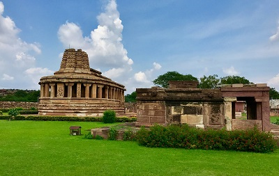
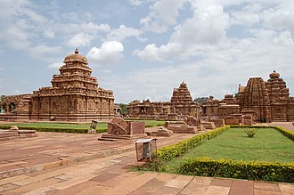
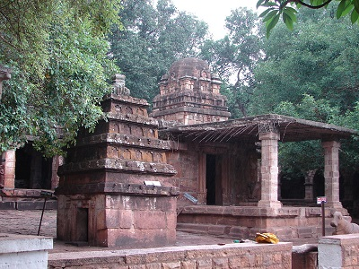
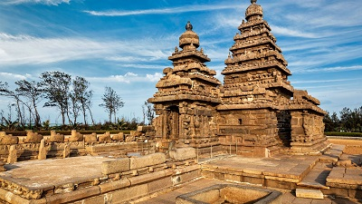
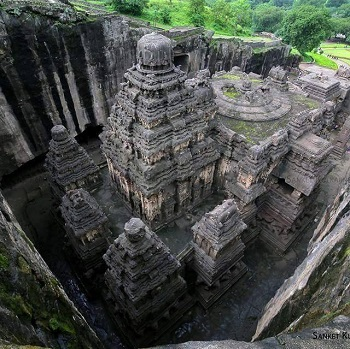
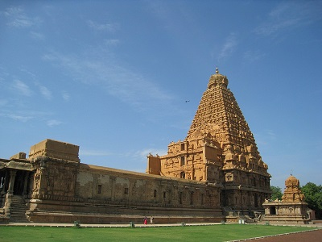

Early Medieval Period (c. 600-1200 CE)
The Harsha Period
Pushyabhuti/Vardhana Dynasty
-
The decline of the Gupta Empire had resulted in the splitting
of northern India into several kingdoms.
-
An important ruling family to gain prominence after the fall
of the Gupta was that of the Pushyabhutis, who had their
capital at
Thanesar
(Haryana).
-
Not much is known about the first three kings of the dynasty
and most likely the dynasty came into prominence with the
accession of
Prabhakar Vardhana, who aided the Maukhari king
Avanti-Varman of Kannauj(UP) to defeat the Hunas
(central asian tribe).
-
Prabhakara's daughter Rajyashri married Avanti-Varman's son
Graha-Varman. As a result of this marriage, Prabhakara's
political status increased significantly. He was succeeded by
his elder son
Rajyavardhana.
-
Graha-Varman (ruler of Kannauj), husband of Rajyashri (sister
of Rajyavardhana) was murdered by Devagupta (ruler of Malwa)
in alliance with Shashanka of Gauda (Bengal).
-
Rajyavardhana killed Devagupta but was himself killed by
Shashanka in AD 606. Prabhakara's younger son
Harsha-Vardhana then ascended the throne.
Harshavardhana (AD 606-647)
-
Harsha, also known as Siladitya, ascended the throne in
AD 606 and from this year, Harsha Era began.
- Harsha made Kannauj(UP) his capital
-
At the height of Harsha's power, his Empire covered much of
North and Northwestern India, extended East till Kamarupa
(Assam), and South until Narmada River.
-
In Eastern India, he faced opposition from Shaivite king
Shashanka of Gauda. Harsha defeated Shashanka.
-
The Chinese pilgrim Hiuen Tsang (or Xuanzang ) visited
India during Harsha period and wrote a very favourable account
of him, praising his justice and generosity.
-
Harsha governed his empire on almost the same lines as the
Guptas, that his administration was feudal and decentralised.
-
Harsha was not rigid in his religious views and practices. His
court poet Bana describes him as a Shaivite. According to the
Chinese Buddhist traveller Hiuen Tsang, Harsha was a devout
Buddhist. Harsha established a
large monastery at Nalanda.
-
Harsha was a great patron of the arts and learning. He was
very talented himself as it is believed that he wrote three
dramas. According to
Banabhatta, he was also an accomplished flute player.
-
Harsha was defeated in Deccan by Pulakesin-II, the
Chalukyan king of Vatapi.
-
After the death of Harsha in AD 657, the empire once again
broke up into petty states.This continued up to the 8th
century, when the Gurjara Praticharas and the Rajput rulers
emerged as a big force in northern India.
Literary Works
-
Banabhatta , court poet of Harsha wrote
Harshacharita (The deeds of Harsha), a biography of
Harsha.
- Harsha himself wrote three dramas:
-
Priyadarshika, a romantic drama about a beautiful
princess indisguise Priyadarshika and an already married
king vatsaraj (or Udayana).
-
Ratnavali, a Sanskrit drama about a beautiful
princess named Ratnavali, and a great king named Udayana (of
Vatsa, one of the Mahajanapadas).
- Nagananda
Period from 600-750 AD: Southern India
The Western Chalukyas of Badami/Vatapi
-
As we have seen, the Satavahanas were succeeded by the
Vakatakas. The Vakatakas were followed by the Chalukyas of
Badami, who played a prominent role in the history of Deccan
and south India for about two hundred years from the beginning
of the 6th century CE.
-
They had their capital at Vatapi (modern Badami in
Karnataka).
-
The founder of this dynasty was Pulakeshin I, who
established the independent power of this dynasty.
Pulkeshin II (c. 610−642 CE)
-
The most powerful and famous king of this dynasty, who
achieved many military successes.
-
Contemporary of Harsha Vardhana and defeated him on the banks
of river Narmada. He thus acquired the title of
dakshinapatheshvara (lord of the south).
-
He had conflicts with the Pallavas of Kanchi and
annexed the region between Krishna and Godavari (popularly
known as Vengi) from the Pallavas and placed it under
his brother Vishnuvardhana (Chalukyas of Vengi/Eastern Chalukyas). Thus, the first expedition against the Pallavas, who were
at the time ruled by Mahendravarman I, was a complete
success. However, the second expedition against the Pallavas
proved to be a complete failure as King
Narsimhavarman of the Pallava dynasty killed Pulkeshin
II and adopted the title of Vatapikonda.
Later Rulers
-
The Badami Chalukya dynasty went into a brief decline
following the death of Pulakeshin II due to internal feuds.
-
They ruled from Vengi until about the 10th century. In the
western Deccan, the rise of the Rashtrakutas in the middle of
the 8th century eclipsed the Chalukyas of Badami before being
revived by their descendants, the Western Chalukyas, in the
late 10th century. These Western Chalukyas ruled from
Kalyani (modern Basavakalyan, Bidar in Karnataka) until
the end of the 12th century.
Art and Architecture
Culturally, Chalukyan period is noted for the growth of art and
architecture in Deccan. Their style of architecture is called
‘Chalukyan architecture’. They developed Deccan or Vesara style
of temple-building, which reached its culmination under the
Rashtrakutas and Hoyasalas. Most of the Chalukyan
temple-building activity were concentrated in a relatively small
area of Aihole, Badami, Pattadakal (a UNESCO World Heritage
site) and Mahakuta in modern Karnataka state.

Durga temple complex at Aihole

Pattadakal Complex (UNESCO Site)

Mahakuta temple Complex
The Eastern Chalukyas of Vengi
-
Pulakesin II conquered the Vengi region in eastern Deccan and
in 624 CE appointed his brother Vishnuvardhana as the governor
of this newly acquired territory. Probably after the death of
Pulkeshin II,
Vishnuvardhana declared independence and thus the
Eastern Chalukyas of Vengi came into prominence.
-
Initially, the capital of the Eastern Chalukyas was Vengi
(near modern Eluru) but later it was moved to
Rajamahendravaram (modern Rajamundry).
-
The five centuries of the Eastern Chalukya rule of Vengi saw
not only the consolidation of this region into a unified
whole, but also saw the
efflorescence of Telugu culture, literature, poetry,
and art.
-
Near the end of tenth century, the Eastern Chalukyas of Vengi
were conquered by the Chola king Rajaraja . They
continued ruling the region as feudatories of the Cholas until
the end of 12th century. Their kingdom ultimately succumbed to
the Hoysalas and the Yadavas.
The Pallavas of Kanchi
-
On the ruins of the Satavahanas, in the eastern part of the
peninsula (especially in the Krishna−Guntur region), arose the
Ikshvakus.
-
The Ikshvakus were supplanted by the Pallavas. They are from
Tondaimandalam (the land between the north Penner and
north Vellar rivers), mostly comprising of southern Andhra
Pradesh and northern Tamil Nadu with their capital at
Kanchi.
-
Simhavishnu: He supposedly defeated the Ikshvakus and
laid a firm foundation for the Pallava empire.
-
Mahendravarman I (c. 590−630 CE): During his reign,
conflict between the Chalukyas of Badami and the Pallavas
heightened and he was defeated by Pulekshin II who annexed the
northern part of the Pallava kingdom. He initiated the
construction of the famous
shore temple at Mahabalipuram.
-
Narasimhavarman I/Mahamalla (c.630−668 CE): Avenged his
father’s defeat and not only defeated Pulkeshin II but also
invaded the Western Chalukyan kingdom and captured Badami.It
is in honour of Narasimhavarman I that Mahabalipuram is also
known as Mamallapuram.
-
In c.893 CE, the Pallavas were ultimately overthrown by the
Chola king
Aditya I and the area of Tondaimandalam passed under
the suzerainty of the Cholas. Culturally, the reign of
Pallavas is important for the growth of
Tamil bhakti literature and the Dravidian style of art
and architecture in south India. It was under them that
Mahabalipuram emerged as an important centre of temple
architecture.

Shore temple at Mahabalipuram (UNESCO site), Tamil Nadu
The period from 750-1000 AD: The Tripartite struggle in Northern
India
The period from c.750−1000 CE was marked by the growth of three
important political powers, namely, the
Gurjara−Pratiharas (who dominated the western India and
the upper Gangetic valley till the middle of the 10th century),
the Palas (who ruled over eastern India till the middle
of the 9th century), and the Rashtrakutas (who dominated
the Deccan and also controlled territories in north and south
India). These three kingdoms were constantly fighting with each
other with an aim to set up their control on the Gangetic region
in northern India. This conflict among these three powers is
often described as the ‘tripartite struggle’.
The Gurjara Pratihara dynasty
-
The dynasty was founded by Harichandra in and around
Jodhpur, south western Rajasthan.
-
They came to prominence in the second quarter of the 8th
century, during the reign of Nagabhatta I.
-
Bhoja I / Mihir Bhoja (c.836−885 CE) proved to be the
most successful and popular ruler of Pratiharas. He had his
capital at Kannauj.
-
The Gurjara−Pratiharas were instrumental in containing Arab
armies moving east of the Indus.
-
By the 10th century AD, several feudatories of the empire took
advantage of the temporary weakness of the Gurjara-Pratiharas
to declare their independence, notably the Paramaras of Malwa,
the Chandelas of Bundelkhand, the Tomaras of Haryana, and the
Chauhans of Rajputana.
The Palas of Bengal
-
Gopala founded the Pala Empire in 750 AD. His son
Dharmapala succeeded him.
-
The Palas were followers of the Mahayana and Tantric schools
of Buddhism.
-
Dharmpala revived Nalanda University, which had been
famous all over the eastern world. He also
founded the Vikramshila University.
-
The Pala period is considered
one of the golden eras in the history of Bengal. The
Palas brought stability and prosperity to Bengal after
centuries of civil war between warring divisions.
-
The resurgent Hindu Sena dynasty dethroned the Pala Empire
ending the reign of the last major Buddhist imperial power in
the Indian subcontinent.
The Rashtrakutas
-
Founded by Dantidurga around 753, the Rashtrakuta
Empire ruled from its capital at
Manyakheta/Malkhed (Karnataka) for almost two
centuries.
Govinda III
and
Amoghavarsha
were the most famous of the long line of able administrators
produced by the dynasty.
-
By the end of 10th century AD, The revolting feudatories
brought their empire down. The
Western Chalukyas (of Kalyani) annexed Manyakheta and
made it their capital.
Art and Literature
-
Amoghavarsha was also an author and wrote
Kavirajamarga, the earliest known Kannada work on
poetics.
-
Architecture reached a milestone in the Dravidian style, the
finest example of which is seen in the
Kailasanath Temple at Ellora.
-
Other important contributions are the
Kashivishvanatha temple and the
Jain Narayana temple at Pattadakal in modern
Karnataka, both of which are UNESCO World Heritage Sites.

Kailasanath Temple at Ellora, Maharashtra
Western Chalukyas of Kalyani
-
The Western Chalukya Empire ruled most of the western
Deccan, South India, between the 10th and 12th centuries.
-
Their capital was Kalyani (modern Basavakalyan, Bidar
district in Karnataka)
-
During this period the other major ruling families of the
Deccan, the Hoysalas, the Yadavas of Devagiri, the Kakatiya
dynasty and the Southern Kalachuris, were subordinates of
the Western Chalukyas and gained their independence only
when the power of the Chalukya waned during the latter half
of the 12th century.
-
The Western Chalukyas developed an architectural style known
today as a transitional style, an architectural link between
the style of the early Chalukya dynasty and that of the
later Hoysala empire. Most of its monuments are in the
districts bordering the Tungabhadra River in central
Karnataka. Well known examples are the
Kasivisvesvara Temple at Lakkundi, the
Mallikarjuna Temple at Kuruvatti,
Siddhesvara Temple at Haveri, and the
Mahadeva Temple at Itagi.
-
This was an important period in the development of fine arts
in Southern India, especially in literature as the Western
Chalukya kings encouraged writers in the native language of
Kannada, and Sanskrit like the philosopher and statesman
Basava and the great mathematician
Bhaskara II.
Period from 850-1200 CE: Southern India
The Cholas
-
The Cholas, famous in Indian history for their
local self-government, founded a mighty empire in
southern India during c. 850−1200 CE.
-
The relationship between these Cholas, called the
‘Imperial Cholas of Tanjore’, with the earlier Cholas
mentioned in Sangam literature is not very clear.
-
The Cholas came to power after over throwing the authority of
the Pallavas in South India.
-
They developed a strong navy, which further aided them
to develop sea trade in the Indian Ocean and to conquer Sri
Lanka and the Maldives Islands.
-
The founder of the Chola dynasty was Vijayalaya (9th
century CE).
Rajaraja I (c.985−1014 CE)
-
Greatest Chola ruler, who helped raise the Chola Empire to
become the largest dominion in South India till the 13th
century.
-
In c.1010 CE he constructed the Rajarajeshwara or
Brihadesvara temple, dedicated to Shiva at
Thanjavur (Tanjore). This temple is also called the
Rajaraja temple.

Brihadishvara temple complex, Thanjavur, Tamil Nadu.
Rajendra I (c.1014−1044 CE)
-
Son of Rajaraja I, who carried forward his father’s
expansionist policy and continued the Chola territorial
expansion.
-
He completely overran the Pandyas and Cheras and included them
in his empire.
-
In 1022 CE, he led an expedition to the north, crossed the
Ganga and
defeated the Pala ruler, Mahipal I and the Western
Chalukyas. To commemorate this occasion, he assumed the title of
Gangaikondachola
(meaning ‘the Chola conqueror of Ganga’) and established a new
capital named Gangaikondacholapuram (Tamil Nadu)
(meaning ‘the city of the Chola conqueror of the Ganga’) near
the mouth of the river Kaveri.
Later rulers
-
The last powergul ruler was Rajadhiraja. The later
rulers tried to maintain the Chola empire but the Chola power
gradually declined and the dynasty came to an end in the 13th
century.
-
The place of the Cholas was taken by the Pandyas and the
Hoysalas in the south, and of the later Chalukyas by the
Yadavas and the Kakatiyas. These states too extended patronage
to arts and architecture. But unfortunately, they weakened
themselves by continually fighting against each other, sacking
towns and not even sparing the temples. Finally, in the
beginning of 14th century, they were destroyed by the Sultans
of Delhi.
Period from 1000 to 1200 AD: Northern India
-
Breakdown of the tripartite powers (the Rashtrakutas,
the Palas, and the Pratiharas) into many smaller kingdoms all
over the country.
-
For example, in northern India, the disintegration of the
Pratihara empire brought to the forefront various Rajput
states under the control of different Rajput dynasties,
such as:
- the Chahamanas (Chauhans) of Ajmer, Rajasthan
- the Chandellas of Bundelkhand
- the Paramaras of Malwa
- the tomars of delhi
- Chalukyas/Solankis of Kathiawar. (Gujarat)
-
These states fought and resisted the Turkish attacks from
northwest India led by Mahmud of Ghazni and
Mohammad Ghori in the 11th and 12th centuries, but
their failure to stand united against the invaders eventually
led to their defeat.
-
Most famous rajput ruler was
Prithviraj Chauhan (1178-92), a Chahamana ruler of
Delhi and Agra who fought two battles with Muslim invader
Muhammad Ghori.
-
First Battle of Tarrain (1191): Prithviraj defeated
Muhammad Ghori.
-
Second Battle of Terrain (1192): Prithviraj was
defeated and killed by Muhammad Ghori.
Architectural Works
-
Vishvanatha Temple, Lakshmana Temple and Kandariya Mahadeva
temple
at Khajuraho (Madhya Pradesh), built by Chandellas of
Bundelkhand is an UNESCO, World Heritige Site.
-
Dilwara temple, a group of svetambara Jain temples near
Mount Abu settlement, Rajasthan's only hill station. They were
built by the ministers of the Solanki rulers of Gujarat.